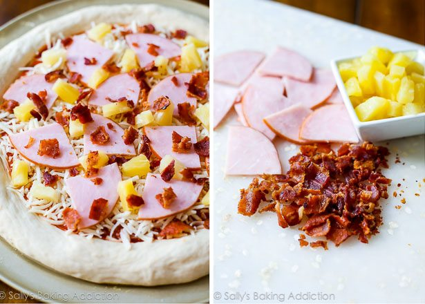

How to make a Pineapple and Ham Pizza
Ingredients
1/2 recipe homemade pizza crust 1(Link to dough here -> )
1/2 cup (127g) pizza sauce, or more depending how much you like (homemade or store-bought)
1 and 1/2 cups (6oz or 168g) shredded mozzarella cheese
1/2 cup (75g) cooked ham or Canadian bacon, sliced or chopped
1/2 cup (82g) pineapple chunks (canned or fresh)
3 slices bacon, cooked and crumbled (Optional)
Directions
Prepare the pizza dough and preheat the oven to 475F.
After waiting 15 minutes, top with pizza sauce, then the mozzarella cheese, then the ham/Canadian bacon, and pineapple. Sprinkle with bacon crumbles.
Bake for 14-16 minutes or until the crust is lightly browned and the cheese is bubbling. For the last minute, move the oven rack to the top rack to really brown the edges. (Optional)
Remove from the oven. Slice and serve.
Store leftover pizza covered tightly in the refrigerator and reheat as you prefer.
